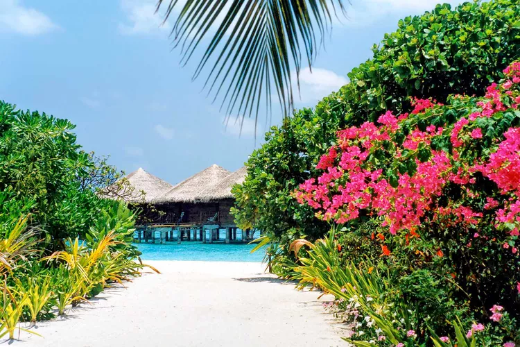

Discover
Maldives
One of the most serene, romantic, and wildly scenic destinations in the world.
A chain of 1,192 islands in the Indian Ocean, the Maldives are clustered into atolls, based on their proximity to coral reefs, and are surrounded by azure-colored lagoons. These still waters lend themselves to those dreamy overwater bungalows that have become synonymous with the archipelago, while the coral reefs make it a sought-after snorkeling destination. Of course, many visitors to this idyllic vacation spot will be content to luxuriate on the islands' pristine stretches of fine white sand. With that in mind, these are the 15 best beaches in the Maldives.
The most beautiful beaches


